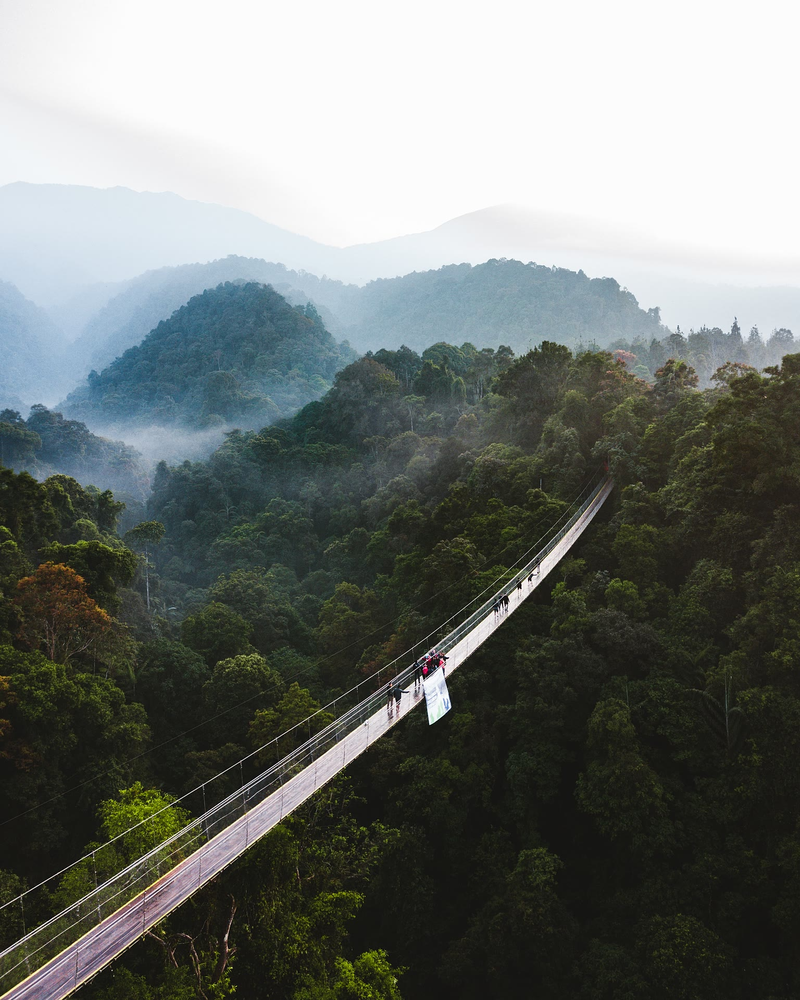

Situ Gunung
Situ Gunung merupakan tempat wisata di Sukabumi yang menyimpan berjuta pesona, berjuta keindahan, yang diterjemahkan ke dalam beberapa spot wisata yang sangat populer. Bahkan, salah-satu spotnya yaitu Situ Gunung Suspension Bridge, adalah Jembatan Situ Gunung yang memiliki status sebagai jembatan gantung di tengah hutan terpanjang di Asia Tenggara.
Lokasi Dan Alamat Situ Gunung
Lokasi Situ Gunung terletak di Taman Wisata Alam Situ Gunung, Sukabumi. Adapun alamat Situ Gunung Sukabumi berada di Kadudampit, Sukabumi, Provinsi Jawa Barat.
Rute Menuju Situ Gunung Sukabumi
Jalan menuju Situ Gunung bisa diakses dengan menggunakan kendaraan roda dua, maupun roda empat, hingga sampai di area parkiran utama. Jarak Situ Gunung dari alun-alun Kota Sukabumi hanya berjarak sekitar 16 kilometer, dengan kisaran waktu tempuh 40 menit perjalanan dengan menggunakan kendaraan pribadi
Harga Tiket Masuk Situ Gunung
Tiket masuk Situ Gunung Rp. 16.000 per orang, saat weekday, untuk rekreasi.
- Tiket masuk Situ Gunung Rp. 18.500 per orang, saat weekend, untuk rekreasi.
- Tiket camping Situ Gunung Rp. 24.000 per orang, saat weekday.
- Tiket camping Situ Gunung Rp. 29.000 per orang, saat weekend.
Fasilitas Di Situ Gunung
Fasilitas wisata di Situ Gunung Sukabumi sudah sangat lengkap untuk menunjang kenyamanan wisata para pengunjung. Di antaranya:
- Area parkir
- Toilet
- Mushola
- Glamping Situ Gunung Sukabumi
- Marung
- Layanan Reservasi 24 jam
- Spot Selfie
- Spot wisata populer lainya
Daya Tarik Situ Gunung
1. Trip Rakit
Daya tarik yang pertama dari Situ Gunung, kita mulai dari aktivitas wisatanya berupa trip rakit mengitari danau Situ Gunung yang sangat eksotis. Trip rakit menjadi aktivitas yang langka, terutama bagi mereka yang terbiasa hidup di kota besar. Kenalkan anak-anak kita kepada alam, supaya mereka tumbuh dewasa dengan rasa cinta terhadap alam.
2. Camping
Aktivitas wisata di Situ Gunung yang ke dua, sekaligus menjadi daya tariknya adalah camping. Spotnya sudah disediakan khusus oleh pihak pengelola. Bagi yang camping, atau pengunjung yang menyewa fasilitas glamping, pihak pengelola telah mempersiapkan fasilitas api unggun.
3. Situ Gunung Suspension Bridge
Situ Gunung Suspension Bridge, atau Jembatan Gantung Situ Gunung Sukabumi dibangun pertamakali di pertengahan tahun 2017, salah-satunya dengan keterlibatan masyarakat sekitar. Dan pada tanggal 9 Maret 2019, Situ Gunung Suspension Bridge baru diresmikan, dan dibuka untuk umum. Dari semenjak dibuka, jembatan gantung tersebut menjadi spot favorit pengunjung untuk melakukan selfie. Selain itu, Jembatan Gantung Situ Gunung Sukabumi menyandang status sebagai jembatan gantung di dalam hutan terpanjang di Asia Tenggara, sekaligus jalan baru, atau akses baru menuju Curug Sawer.

4. Curug Sawer
Curug Sawer Sukabumi masih berada satu kawasan dengan Situ Gunung Suspension Bridge, tepatnya berada di kaki Gunung Gede Pangrango. Dapat dipastikan udara yang dirasakan sangat sejuk sekali, dengan dihiasi rindangnya pepohonan di sekitar curug. Curug atau Air Terjun Sawer ini memiliki ketinggian sekitar 35 meter, dengan aliran airnya yang cukup deras. Sehingga pengunjung dilarang untuk bermain air atau bahkan mandi tepat berada di bawah jatuhnya air.
Bagikan
Langganan dan Dapatkan Info Tentang Wisata di seluruh INDONESIA